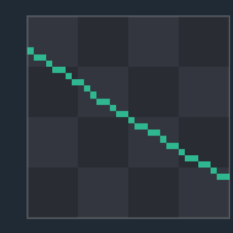
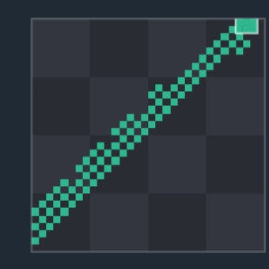
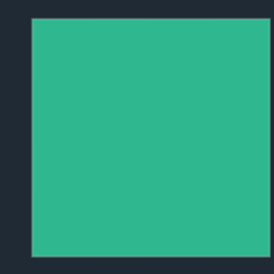
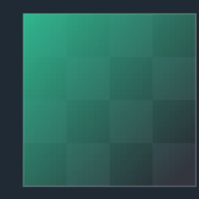
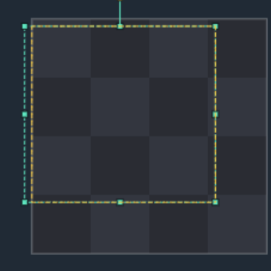
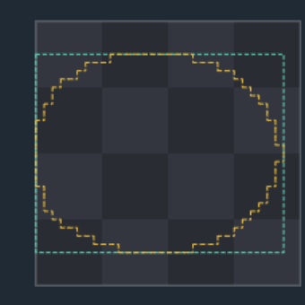

Tools
22 toolbar tools
Icon, default hotkey and a short description for every tool. The six most visual ones include a real canvas example (614% zoom, 40×40 document).
← Interface overviewBrushes & retouching 10
Direct painting and pixel editing under the cursor. All support Size / Spacing / Intensity from the Brush panel where applicable.
Basic pixel painting with the current color. Has a pixel-perfect mode (removes stray diagonal pixel pairs at stroke corners).

hover to playRecolors already-painted pixels without touching transparent ones. Alt limits it to replacing only the color under the first click.
Erases pixels to transparency using the brush mask (shape, size, spacing — same as Pencil).
Soft brush — blurs edges by Blur radius. Shift on Pencil temporarily switches to Smooth without changing tools.
Smears pixels along the stroke direction, like a finger through wet paint.
Lightens pixels under the brush proportionally to Intensity.
Darkens pixels under the brush — the opposite of Dodge.
Stamp cloning: Shift+click sets the source, further strokes copy pixels offset from that source.
Increases local contrast under the brush — the reverse of Smooth.
Paints with an ordered (Bayer) or geometric pattern instead of a solid fill. Density sets the share of painted cells, Alt flips the pattern horizontally.

hover to playFills & shapes 5
Fill an area or draw geometry in one gesture instead of pixel by pixel.
Fills the contiguous area matching the clicked pixel's color (threshold — Tolerance). Has an "all matching pixels" mode instead of just the contiguous region.

hover to playDraws a gradient from the primary color to secondary stops along the drag direction. "Limit to region" constrains the fill to the area under the start point (like Bucket); Shift snaps the angle to 45° steps.

hover to playA straight line between the press and release points.
A rectangle spanning the drag's diagonal. "Filled shape" in the Brush section toggles outline vs. fill.
An ellipse inscribed in the drag's bounding box. Same "filled shape" toggle as Rectangle.
Selection 3
Shift always adds to the current selection, Ctrl (Cmd on Mac) subtracts; a plain drag replaces it.
Rectangular area (mint frame + gold pixel outline). Drag inside to move, drag a handle to resize/rotate, arrow keys nudge by 1px.

hover to playA freeform area following the drag path; the boundary closes automatically on release. Switch to Select (M) to move it.

hover to playSelects pixels by the clicked color (threshold — Tolerance, same mechanism as Bucket). Clicking a transparent pixel is ignored.
Utilities & transform 4
Don't paint directly — they sample the canvas, place presets, or move what's already drawn.
Click samples the pixel under the cursor as the primary color. A temporary mode (modifier, Ctrl by default) switches to it from any color tool and switches back on release.
Stamps a saved image from the Stamp library panel (or an Atlas tile). Placement is not clipped at the canvas edge — pixels past the artboard stay on the layer as overflow (faded + dashed box only while Move is active, or live during the stroke). A tiled axis wraps instead. Dragging a stamp from the panel onto the canvas applies it once without switching tools.
Rasterized bitmap-font text (built-in Pixis 5×7 / 3×5 or an imported JSON font). Click sets the top-left corner, supports multi-line text.
Move/transform: drag moves the layer (paint or sprite). Paint pixels that leave the canvas stay on the layer and show faded (dashed box) only while Move is active, so you can pick them back; a paint stroke that continues past the edge shows those pixels until you release. Flip (H/Y from any tool, or Shift+H/V with no marquee) mirrors canvas + overflow together. The rotate modifier turns a sprite layer; Ctrl+Alt+drag duplicates in place.